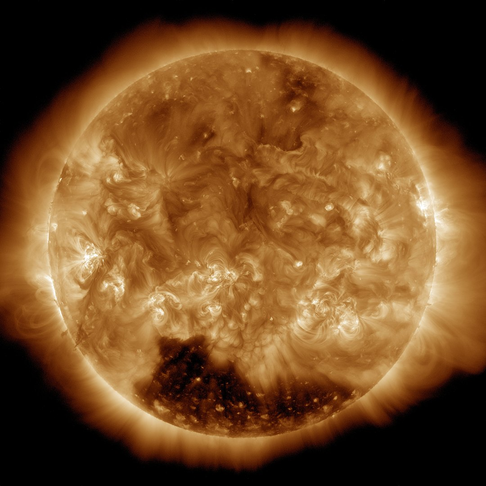

|
| Efetti del meteo spaziale |
| Autore: ESA/Science Office |
Il meteo spaziale è la sezione dell’astronomia che si occupa delle dinamiche dei fenomeni solari e i loro effetti sul resto del sistema solare. Poiché viviamo in un epoca nella quale la tecnologia umana dipende sempre di più dallo spazio, il monitoraggio del meteo spaziale diventa molto importante per saper prevedere e mitigare i fenomeni che possono influire negativamente sulla nostra tecnologia spaziale.

|
| Effetti del meteo spaziale |
| Autore: ESA/Science Office |
Il Sole manda un flusso costante di plasma detto vento solare che impatta con il gas interstellare creando una “bolla” nella quale risiede il nostro sistema solare. Fortunatamente la nostra Terra possiede un campo magnetico detto magnetosfera, che ci protegge dal vento solare, che altrimenti spazzerebbe via la nostra atmosfera. Non è una barriera perfetta e parte del vento solare riesce a penetrarla nei suoi punti deboli, collidendo con l’atmosfera ai poli. L’interazione delle particelle cariche che compongono il vento solare con l’atmosfera crea le aurore.
Anche il nostro Sole possiede un campo magnetico chiamato campo magnetico interplanetario, che anche governa i fenomeni solari (più informazioni nel pannello sul Sole). Il campo magnetico viene trasportato attraverso il sistema solare dal vento solare e le sue proprietà cambiano costantemente.
|  |
| Effetti del meteo spaziale |
| Autore: ESA/Science Office |
Il buco coronale è un area del Sole dove le linee del campo magnetico si espandono molto lontano nello spazio creando un buco nella corona solare. Questo permette al vento solare di sfuggire dal Sole a velocità molto superiori, raggiungendo il vento solare normale, creando addensamenti dove il campo magnetico è anche più potente. Questi addensamenti possono generare tempeste geomagnetiche minori.
| Espulsione di massa coronale avvenuta il 28/3/2025 vista da SOHO | Stessa espulsione di massa coronale vista da SDO |
| Reallizzata con: JHelioviewer |
Un brillamento solare è un esplosione di luce molto intensa negli UV estremi e raggi X, che dura da pochi minuti a un’ora, causate dalla rottura di campi magnetici ingarbugliati delle macchie solari. Questi possono rompere dei campi magnetici espellendo così parte della atmosfera solare nello spazio. Queste nubi di plasma intrise dal campo magnetico solare sono dette espulsioni di massa coronale. Queste di solito contengono campi magnetici più forti, sono molto più dense e più veloci del vento solare. Se queste impattano il campo magnetico terrestre possono generare anche potenti tempeste geomagnetiche.
Un’altra causa di espulsioni di massa coronale sono le eruzioni dei filamenti solari.
I filamenti o protuberanze sono nubi di gas ionizzati che si formano sopra le superfici solari tra aree di polarità magnetiche opposte. Quando questi diventano instabili collassano e vengono riassorbiti nel Sole o vengono espulsi nello spazio.
| Simulazione tempesta geomagnetica |
| Autore: NASA's Goddard Space Flight Center |
Le tempeste geomagnetiche sono disturbi temporanei della magnetosfera terrestre causati dall’impatto di espulsioni di massa coronale o addensamenti di vento solare. L’aumento della pressione del vento solare inizialmente comprime la magnetosfera. Il campo magnetico del vento solare interagisce con quello terrestre e trasferisce parte dell’energia nella magnetosfera. Entrambe le interazioni causano un aumento del movimento del plasma attraverso la magnetosfera e un aumento della corrente elettrica nella magnetosfera e nella ionosfera. Parte del plasma viene trasportato verso i poli causando le aurore.
Le tempeste geomagnetiche causano vertiginosi aumenti di radiazioni, perciò sono pericolose per gli astronauti e i satelliti. Inducono correnti elettriche sulla superficie terrestre. Nei casi più estremi possono causare danni alle reti elettriche. L’intensità di una tempesta geomagnetica viene rappresentata dalla scala G della NOAA: da G1 (minore) a G5 (estrema).
Per maggiori approfondimenti sui singoli indici e dati spaziali consiglio il sito spaceweatherlive.com/
 |
| Autore: United States Air Force photo by Senior Airman Joshua Strang |